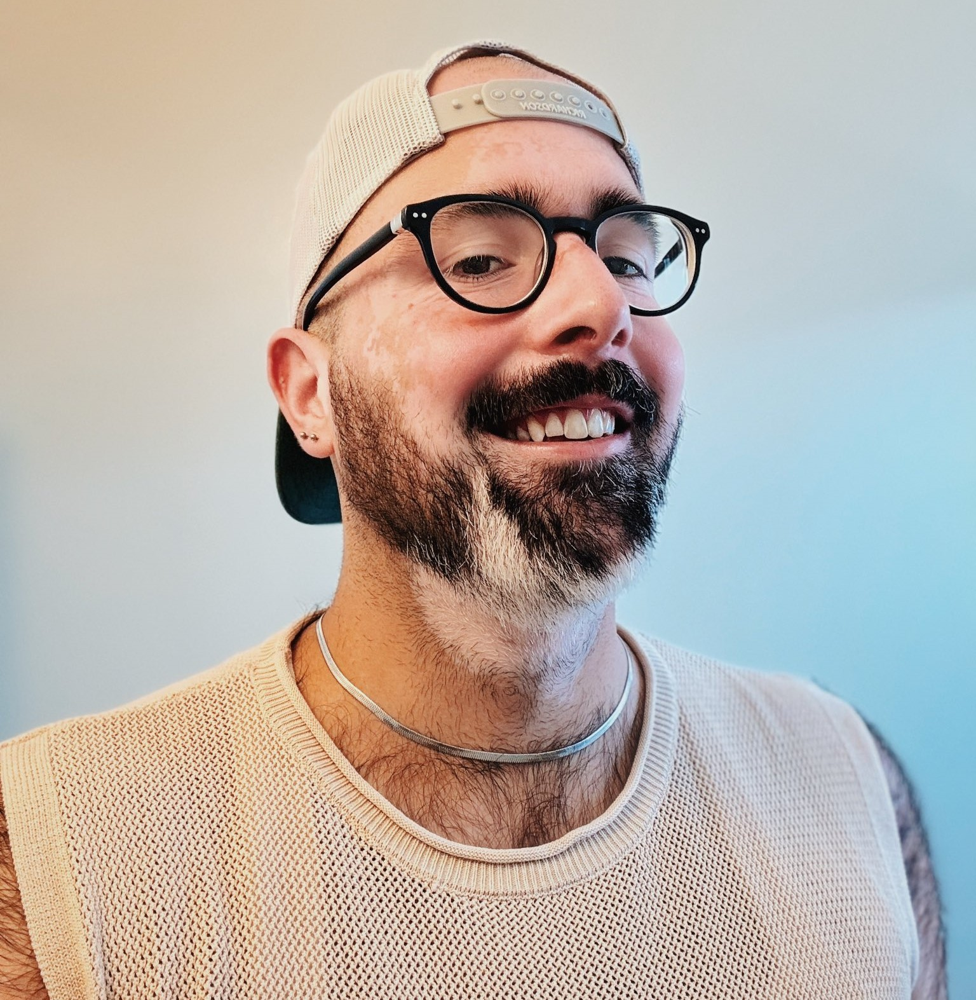

Principal Investigator
Vaughn M. Shirey, Ph.D.
(any/all/no pronouns) | Pronunciation: Von Shy-ree
I am broadly interested in using natural history collections, fieldwork, and participatory science data to answer questions about how global change processes shape lepidopteran biodiversity on our planet. I am also invested in actioning science in the conservation sphere to address global challenges in biodiversity conservation, sustainability, and resilience.
Outside of research, I enjoy explorations of alternative process photography; Western esotericism, queer theory, and psychology; indie, punk, hyperpop, and techno music; and cooking vegan cuisines. I hail from Philadelphia originally with my bengal cat, Sheikh.
I take a very non-traditional approach to my pedagogy, mentorship, and science, focusing on theories of leadership, individuation, and creativity. I believe a scientist can be anyone at any time.
Education and Training
- David H. Smith Postdoctoral Conservation Research Fellow | University of Southern California and University of Florida
- Ph.D. in Biology | Georgetown University
- B.S. in Environmental Science | Drexel University